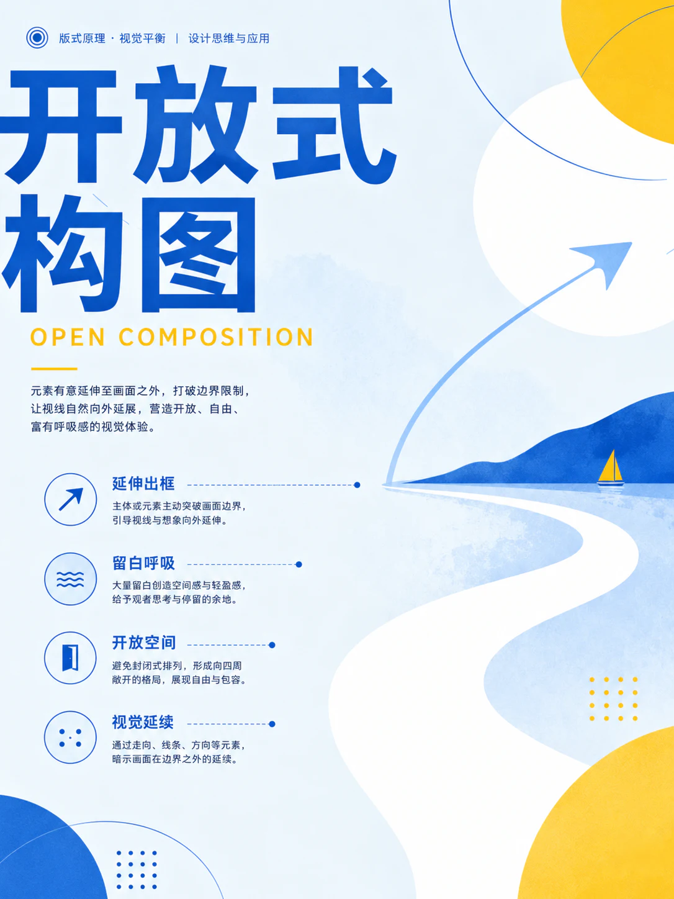

海面、公路、群山与阳光天然指向远方。让地平线和云影冲出页缘，再留出大片晴空放标题，瞬间唤起「身在旅途」的代入感。
01
四道门，把视野放出去
Four Doors Beyond the Frame
为什么半个太阳比画在正中间的一整个太阳看起来更辽阔？因为人脑遵循完形心理学的「继续律」——只要弧线、道路和地平线果断穿出边框，大脑就会自动在脑海里把画框外面补全。原海报列出的四条原则，就像四扇朝外推开的门，缺了哪一扇，视野都会缩回盒子里。
02
切在哪里，才有想象力
The Art of the Crop
做开放式构图时，新手最常栽在两个极端：要么害怕被裁坏，把图形缩在框里；要么把图形刚好推到离边界只差一根发丝的位置，制造出极难受的「边缘相切」。按平面与摄影排版的常见经验值，外围延续元素跨出边框约 18%–45% 最为从容——切得干脆，同时守住核心主体的完整识别。
出框 28%
黄金出框带（18%–45% 经验值）
切什么
切天空、海面、圆弧、山脉、建筑回廊、前景虚化或大号装饰字。
别切什么
别把核心产品标志、关键人物轮廓或正文阅读主轴劈成半截。
03
同一风景，关与放之别
Open vs Closed Frame
开放式构图并非比它的孪生对照092 封闭式构图更高级，它们只是两种截然不同的情绪开关：封闭让人感到安稳、完结与受控；开放让人感到自由、未完待续与空气流动。拖动下方金黄幕帘，在三套同源实景里直接感受边界一关一放之间的气场切换。
092 封闭式 · 框内自足
091 开放式 · 破框外延
04
从哪来：百年破框史
A Lineage of Open Space
把画框当作「窗口」而非「围栏」，并非现代数字排版的发明。它横跨东方宋画的一角留白、十九世纪巴黎受浮世绘启发的边缘裁切，最终在艺术史、格式塔视知觉与电影理论里沉淀为一套严密的视觉语法。
05
什么时候用，什么时候别用
When to Open, When to Close
说宽了一点
原海报写「避免封闭式排列，形成向四周敞开的格局」。这话在追求呼吸与意境的创意海报里成立，但放到真实业务里并非放之四海而皆准：当用户需要明确边界、安全感或逐件核对完整物件时，强行把元素切出画框反而会像图片裁坏了。点击下方六张项目分诊牌查看边界取舍。
把主视觉图形有意延伸出屏幕右侧或底缘，等于用视觉暗号告诉访客「下面还有内容」，比生硬贴一枚向下箭头自然得多。
通过大胆局部裁切配合充裕留白，把观者的注意力从繁琐细节拉向材质、光影和空间尺度，高级感正是来自「留白不说满」。
买家需要看清整件商品的外形、接口与比例。把鞋头或机身切在画框外，只会引发「是不是缺配件」的焦虑，应改用完整的封闭呈现。
当一屏同时塞满十几个图表模块时，清晰的边框分组能帮人快速区分归属；强行取消边界并让图表破边，只会让数值归属混乱不堪。
同属「平衡、动势与焦点」的另外七页
- 想围绕一个核心向四周均匀发散张力，看 087 放射平衡原则。
- 想用近似均匀的单元铺满整面而不设唯一主角，看 088 晶体式平衡原则。
- 想借水平垂直基准线立住端庄沉稳的气场，看 089 静态构图。
- 想靠统一斜向轴线和加速节奏拉出冲刺动感，看 090 动态构图。
- 想反过来把视线牢牢收在画框内部建立完结感，看 092 封闭式构图。
- 想让全页只保留一个不容置疑的视觉落点，看 093 单一焦点构图。
- 想在复杂版面里编排主次有序的多个看点，看 094 多重焦点构图。
06
练一练：哪一帧真敞开
Practice · Spot True Openness
07
原海报与四个核心概念
The Original Poster

版式原理 · 视觉平衡 | 设计思维与应用
元素有意延伸至画面之外，打破边界限制，让视线自然向外延展，营造开放、自由、富有呼吸感的视觉体验。
延伸出框
主体或元素主动突破画面边界，引导视线与想象向外延伸。
留白呼吸
大量留白创造空间感与轻盈感，给予观者思考与停留的余地。
开放空间
避免封闭式排列，形成向四周敞开的格局，展现自由与包容。
视觉延续
通过走向、线条、方向等元素，暗示画面在边界之外的延续。
细看原海报的构图自证：左上角的「开」字紧逼左缘，右上与右下两枚金黄圆、左下钴蓝圆、远山与 S 形白色海路全部果断冲出画面边界；左下四条蓝色虚线横跨留白朝右侧海岸延伸，连说明系统本身都在示范向外敞开。